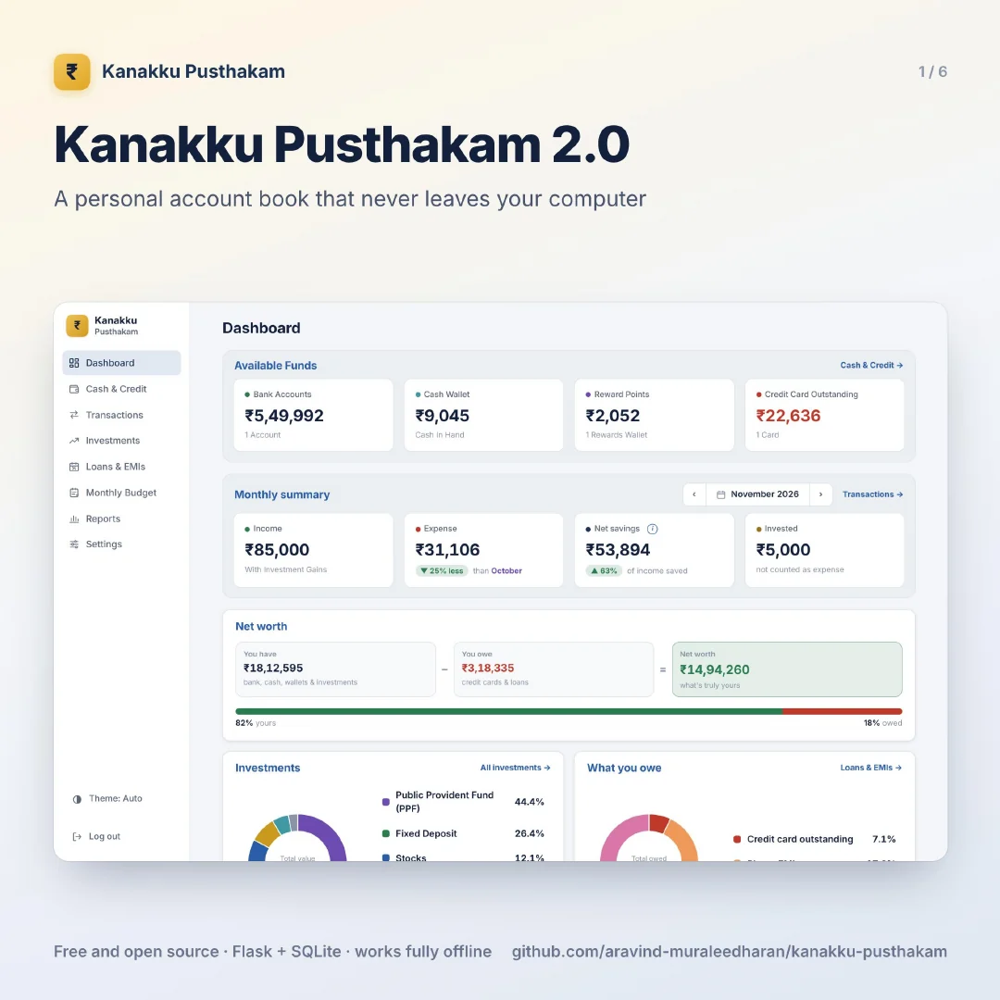
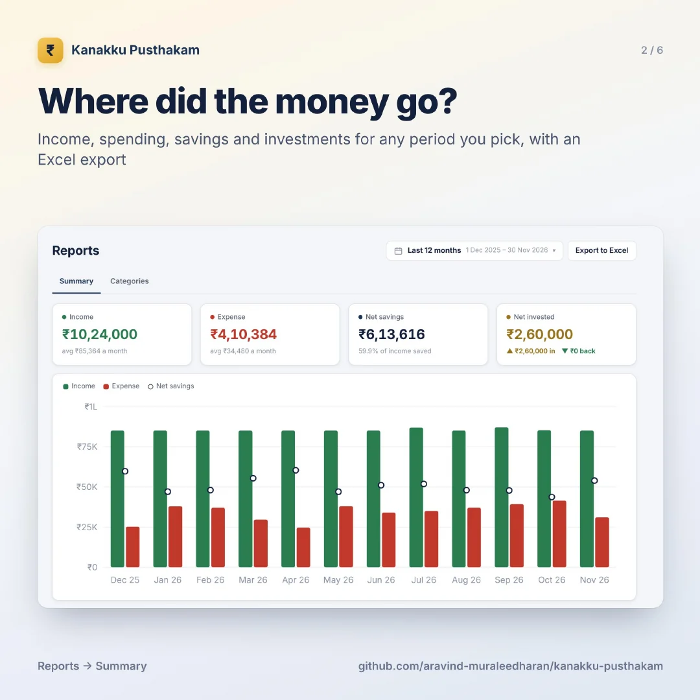
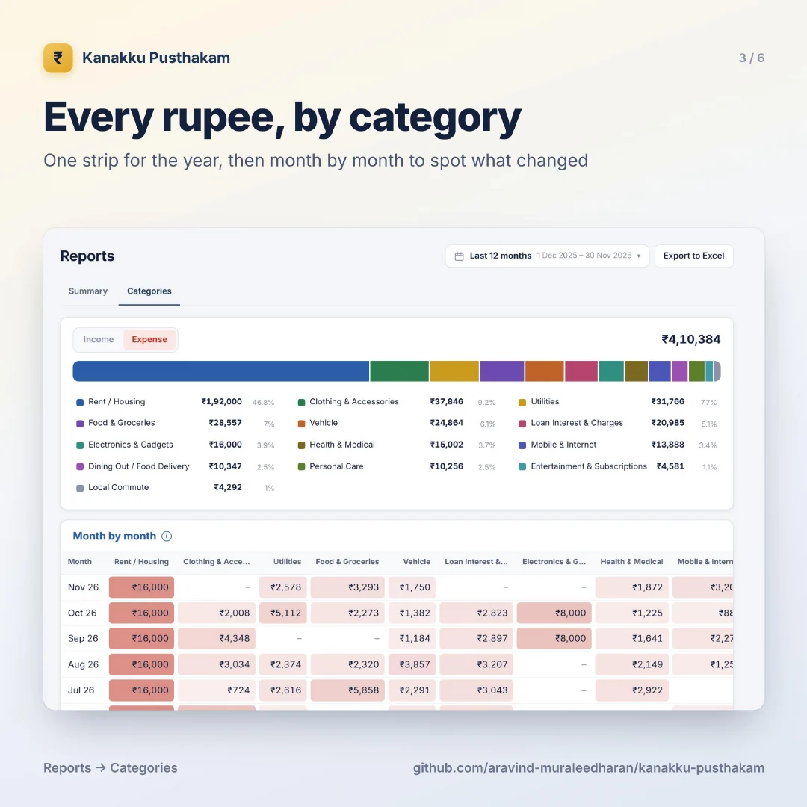
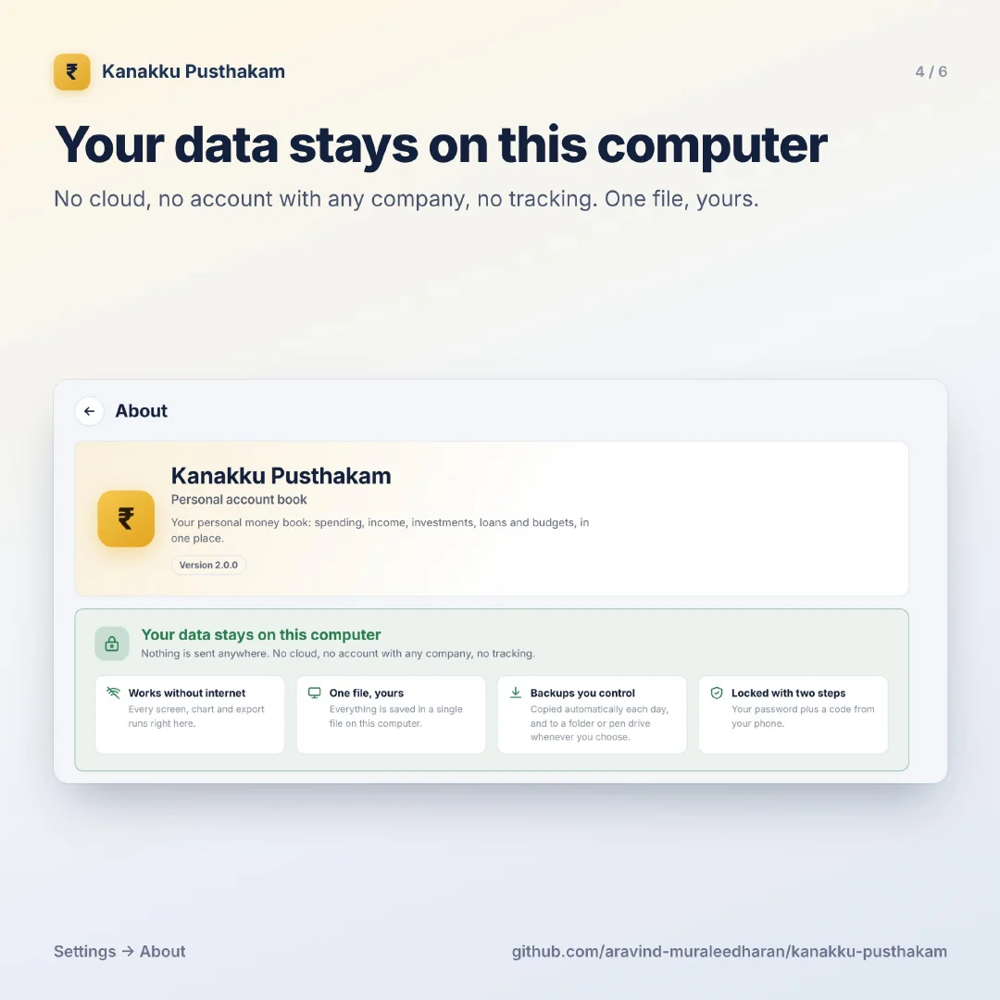
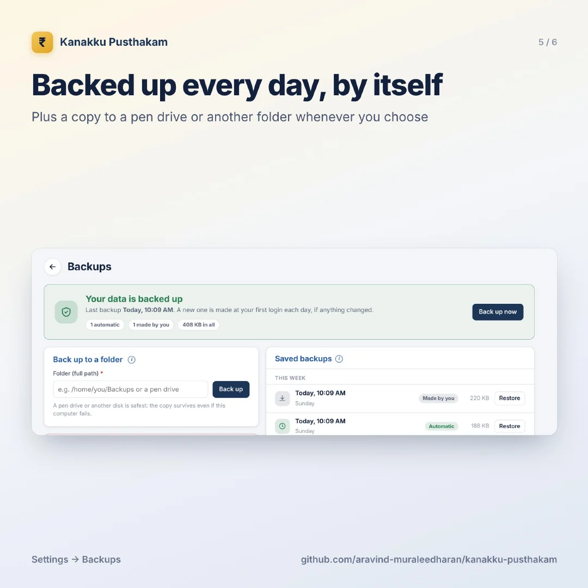

Builds · Privacy
Kanakku Pusthakam 2.0: an account book that never leaves your computer 📒
Where does my money actually go? An honest answer, without handing my finances to the cloud.
Where does my money actually go?
I built Kanakku Pusthakam because I wanted an honest answer to that question without handing my salary, bank balances and loans to an app in the cloud. Today I’m releasing version 2.0, a redesign of every page.
Kanakku Pusthakam (കണക്കു പുസ്തകം) is Malayalam for “account book”. That’s exactly what it is: a personal account book for income, expenses, credit cards, investments, loans and a monthly budget.
The apps I tried had the same three problems:
- They want your data. An account, a cloud sync, sometimes your bank login. My finances are the most private numbers I have.
- They count money wrong. Many add a card swipe as an expense and then the card bill payment as another, so the same dinner shows up twice. Or they treat money I put into an RD as “spent”.
- They don’t speak Indian finance. PPF, chit funds, gold savings schemes, the April–March financial year: usually missing or bolted on.
So I wrote my own, for the way money actually moves in an Indian household.
A quick look 👀





Swipe or scroll sideways · tap an image to see it full size · Download the PDF · screenshots use demo data
Your data never leaves your computer 🔐
Kanakku Pusthakam runs only on your own machine. There is no cloud, no account with any company and no tracking, and it works with the internet switched off.
- One file. Everything lives in a single SQLite database on your disk. You can copy it, back it up or delete it like any other file.
- Only this computer can reach it. The app answers only on 127.0.0.1, so other devices on your network can’t open it, and it refuses requests that try to sneak in through your browser.
- A real login. A password plus a 6-digit code from an authenticator app (Google or Microsoft Authenticator, Authy). It logs you out after the minutes of inactivity you choose.
- Backups you control. One a day at your first login (only if something changed), plus a backup to any folder or pen drive whenever you want.
- No internet, ever. Even the libraries it needs are bundled inside the app. A separate
update.shrefreshes them when you choose to, and checks the app still works before using them.
The trade-off is honest: the database isn’t encrypted, so protect your computer account with a password and use disk encryption if you can.
Counting money the way it really moves 💸
The heart of the app is a few simple rules, so every rupee is counted once and in the right place.
| Entry | Example | Counts as |
|---|---|---|
| Expense | ₹450 dinner paid with a credit card | Expense, on the day you pay |
| Transfer | Paying the credit card bill; an ATM withdrawal | Neither, so nothing is counted twice |
| Invest | ₹5,000 RD instalment | Invested, not spent |
| Maturity | RD returns ₹63,200 for ₹60,000 put in | Only the ₹3,200 gain is income |
| Loan EMI | ₹10,030 EMI: ₹7,900 principal + ₹2,130 interest | Only the interest is an expense |
- The card swipe is the expense. When you pay the card bill, that’s a transfer from your bank to your card, so the dinner isn’t counted a second time.
- Investing isn’t spending. Money moved into an FD, RD, PPF, stocks, gold or a chit fund stays yours. Only the gain or loss when it comes back counts as income. A chit fund settles its gain or loss when you close it.
- A loan’s principal isn’t an expense. You already spent that money when you borrowed it. The interest is the real cost, so only the interest part of each EMI counts. A credit card EMI is different: there, the whole EMI is your purchase being paid off.
What’s new in 2.0 ✨
Version 2.0 reworks every page around one idea: show the answer first, in plain words, with a short ⓘ note wherever a term needs explaining.
- Reports, rebuilt. A Summary tab with totals, an income vs expense chart and the month-by-month table, and a Categories tab with a share strip of every category. Each total shows ▲ or ▼ against the same stretch of time just before, so “this month” is compared with the same days of last month.
- Excel exports with charts. Reports downloads a styled workbook with real Excel charts, and the Monthly Budget exports a matching sheet. Both are built by the app itself, offline.
- A spending panel on Transactions. Earned or Spent, by category, for any month or date range, with filters and pages of 50.
- Your own types. Add loan types (“Gold loan” that works like a loan) and investment types (“Mutual funds” that work like stocks), with the maths of the type you pick.
- Clearer investments and loans. Invested, gain and current value at a glance; loans show what’s left to repay, this month’s EMIs and the interest still to come.
- Settings, Backups, Security and About redesigned. Lists you rename in place, daily automatic backups, a password strength meter, and an About page that says plainly where your data lives.
- Auto-logout that counts real activity. Reading or typing keeps you logged in; walking away logs you out on its own.
The full list is in the changelog on GitHub.
What building it taught me 🧠
- Get the money rules right before the screens. Every report is only as good as how an entry is counted. Deciding that a card bill is a transfer, not an expense, fixed more confusing numbers than any chart.
- Plain words beat finance words. “Principal” became “Invested”, “cumulative net” became “Running net”, and a label like “800% more spent than earned” became “Spent ₹1,51,239 more than earned”. If a number needs a sentence to explain, it goes in an ⓘ, not on the screen.
- Offline is a design choice, not a missing feature. It meant bundling every library, writing the Excel files without an Excel library, and keeping updates as a separate, optional step.
- Real life is messier than the textbook. A chit fund pays its “kuri” before you’ve finished paying in; an FD can pay interest out or keep it inside; a loan was already running when you started tracking it. Each of those needed its own small rule.
- Test on the oldest version you support. One line of the Excel export only worked on Python 3.12, so the app wouldn’t start on 3.10. The tests now run on 3.10 to 3.13 for every change.
Try it 🚀
Kanakku Pusthakam is free and open source under the MIT licence. It runs on Linux today; all you need is Python 3.10 or newer, and there’s nothing to install.
git clone https://github.com/aravind-muraleedharan/kanakku-pusthakam.git
cd kanakku-pusthakam
./start.sh
Your browser opens the app; create your login, scan the QR code with an authenticator app, and
enter your starting balances. Want to look around first? python3 run.py --demo --open
starts it with a year of sample data, kept separate from your own.
Next on the list: recurring entries, bank statement import, and Windows and macOS support.
If you try it, I’d love to hear what works for you and what you’d want next. Open an issue on GitHub or message me on LinkedIn ☕